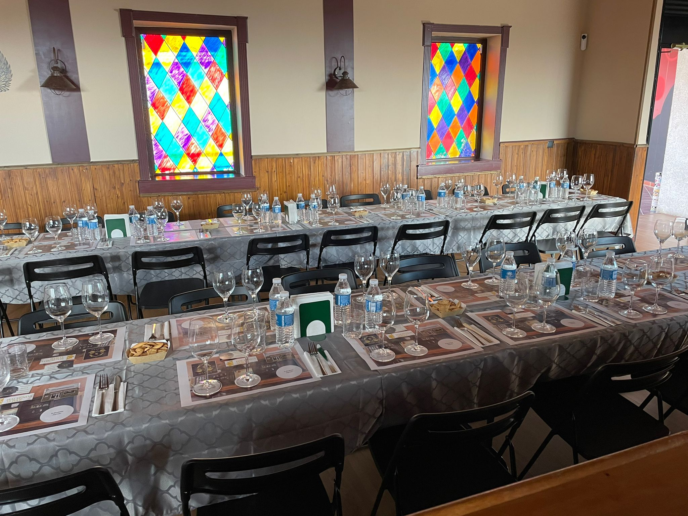

Cata de Vinos con Hacienda Albae
El arte y la tradición vinícola tomaron nuestro local con la celebración de una Cata de Vinos excepcional, guiada por un reconocido experto y con el patrocinio de la prestigiosa bodega Hacienda Albae.
La velada fue un rotundo éxito, congregando a un público entusiasta deseoso de profundizar en los matices y secretos de algunos de los mejores caldos. Nuestro experto conductor elevó la experiencia a un nivel superior, compartiendo la historia, la elaboración y las notas de cata de cada vino.
Desde las primeras añadas hasta las propuestas más audaces de Hacienda Albae, cada copa fue una invitación a un viaje sensorial. Agradecemos enormemente la colaboración de la bodega y la impecable dirección de nuestro experto.
Estamos comprometidos a seguir ofreciendo experiencias de alta calidad como esta. ¡Estad atentos a nuestra web para los próximos eventos gastronómicos y culturales!